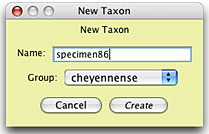

Adding Data points
Geographic Data matrices
The core data for plotting must in the the form latitude/longitude data in a matrix of Geographic Data type. Latitude is the first character, longitude the second.
Data must be in decimal degrees (e.g., 34.1286), not in any of the older formats (e.g., degrees with decimal minutes [34° 07.716'], or degrees, minutes, and seconds [34° 07' 43"]). Do not include the hemisphere (e.g., W or E); instead, you should use the convention that latitudes in the northern hemisphere are positive, in the southern hemisphere negative, and longitudes in the western hemisphere are negative, in the eastern hemisphere positive. Thus, the latitude and longitude of one point in North America is (43.000, -81.254).
You can add new points to your map by adding new taxa to your matrix and then manually entering the latitude and longitude values, or you can use the Add Taxon Tool (if you are using a Taxa Window) or import latitude/longitude values stored in an XML file.
Add Taxon Tool
The Add Taxon Tool () is available in the Taxa Window (it is not available in the Tree Window). Touching this tool on the map will cause a new taxon to be created with those latitude and longitude values. A dialog box will appear in which you can enter the taxon name and the group to which this taxon belongs:

If you hold down the Option key, the Add Taxon Tool will add a taxon at the spot touched without asking you for a taxon name or group; it will use a default taxon name and the group last set in the above dialog box.
Move Taxon Tool
The Move Taxon Tool () is available in the Taxa Window (it is not available in the Tree Window). With it you can move a taxon's symbol to a different locality in the map; this changes the latitude and longitude values for that taxon.
Importing data
You can also import hundreds of data points quickly if you can put them into the appropriate XML format. For example, if you have geographic data stored in a database, and can build an exporter to save them to a text file with the appropriate XML tags, then you can have those localities appear in Mesquite's windows.
The basic format is:
<?xml version=1.0?> <mesquite> <geographicDistribution> <taxon> <name>nameOfTaxon</name> <group>nameOfTaxonGroup</group> <longitude>longitude</longitude> <latitude>latitude</latitude> </taxon> </geographicDistribution> </mesquite>
An example XML file is as follows:
<?xml version=1.0?> <mesquite> <geographicDistribution> <taxon> <name>ex001</name> <group>species1</group> <longitude>-106.3125</longitude> <latitude>42.86667</latitude> </taxon> <taxon> <name>ex002</name> <group>species1</group> <longitude>-118.11917</longitude> <latitude>46.01028</latitude> </taxon> <taxon> <name>ex003</name> <group>species1</group> <longitude>-116.37361</longitude> <latitude>33.72222</latitude> </taxon> <taxon> <name>ex004</name> <group>species2</group> <longitude>-119.28</longitude> <latitude>50.7003</latitude> </taxon> <taxon> <name>ex005</name> <group>species2</group> <longitude>-118.90417</longitude> <latitude>46.08556</latitude> </taxon> </geographicDistribution> </mesquite>
The name of each taxon imported is stored in the <name></name> tag, and the group to which that taxon belongs (see Taxon Symbols) in <group></group>. If you are plotting distributions of species where each dot represents specimens, then typically the <name></name> tag will be for the specimen name or code, and the <group></group> tag will be for the species name.
To import these data, make sure the frontmost window in Mesquite is the matrix editor showing the geographic data. Then choose Import Lat-Long Data from the Utilities submenu of the Matrix menu.